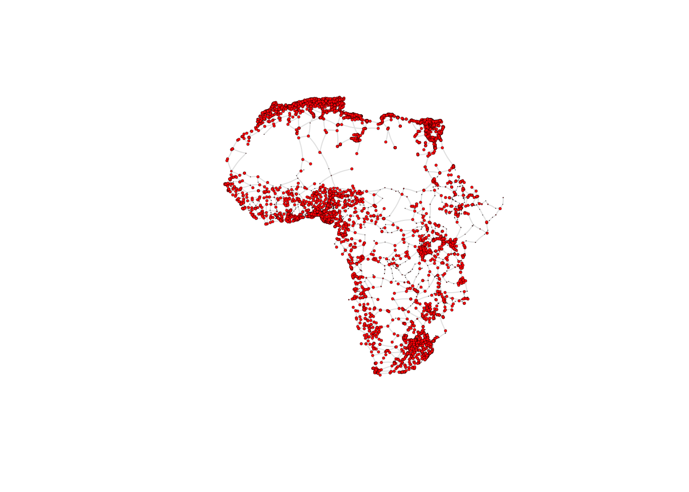
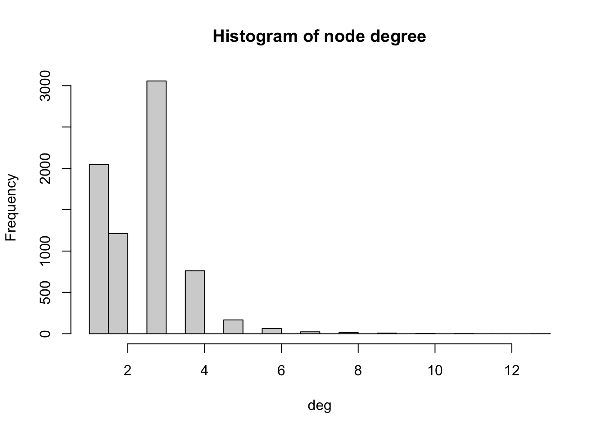
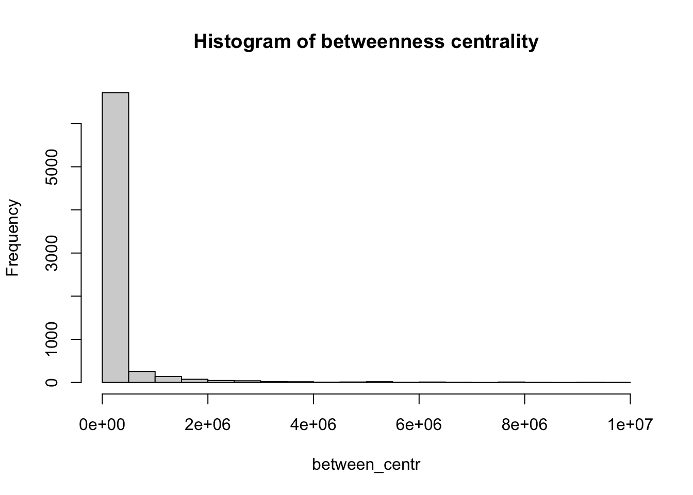
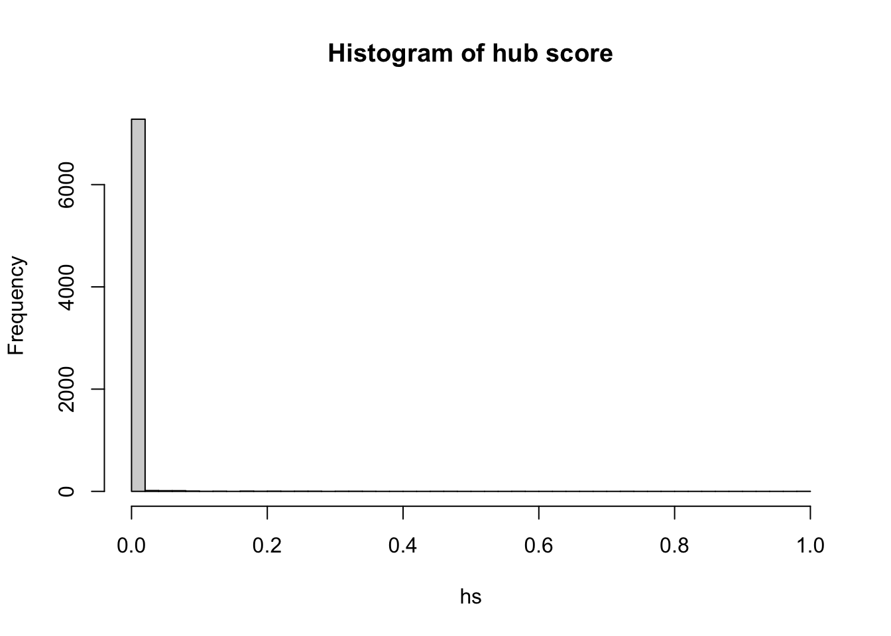
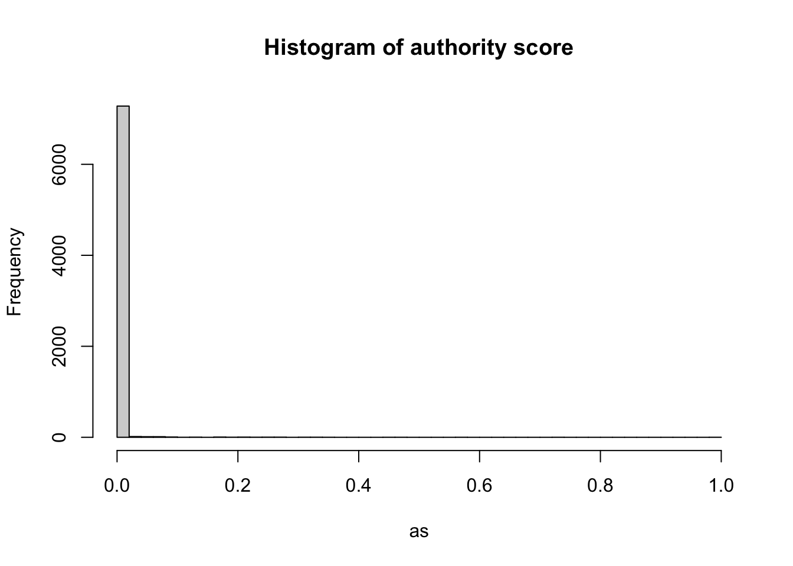

#Support for simple features, a standardised way to encode spatial vector data
library(sf)
#Data manipulation
library(dplyr)
# An R package for network manipulation and analysis
library(igraph)
# Provides a number of useful functions for working with character strings in R
library(stringr)3 The African road network
3.1 Data
Here, we work with a network of African roads constructed by considering all continental cities with more than 100,000 inhabitants as the nodes, obtained from (Moriconi-Ebrard, Harre, and Heinrigs 2016). The edges of the network were created based on the road infrastructure from OpenStreetMap (“Openstreetmap.org”), using all primary roads, highways and trunk roads. Each edge was constructed by measuring the physical distance of consecutive points that describe the intricate patterns of the roads. Thus, a reasonably good estimate of its road length is available for each edge. Additional nodes besides cities are needed to fully describe the road infrastructure, such as some road intersections. These nodes are labelled as “transport nodes” and help define possible routes between cities. Some transport nodes correspond to towns with less than 100,000 inhabitants, so they are labelled as attached to nearby cities. The urban network enables us to consider the existing roads in the continent and measure the travelling distance rather than the physical distance between cities. The constructed network is formed by 7,361 nodes (2,162 cities and 5,199 transport nodes) and 9,159 edges. For more details on how the network was built, see (Prieto-Curiel et al. 2022).
The network is connected, meaning that it is possible to find a sequence of nodes and existing roads linking any pair of cities, and therefore, it is also possible to find the shortest road distance between any two cities and define it as the network distance. The network consists of 361,000 km of road infrastructure and connects 461 million people living in African cities, representing roughly 39% of the continent’s population (Prieto Curiel, Cabrera-Arnau, and Bishop 2022).
3.2 Creating a network from data frame
The data that specifies the nodes and edges of the African road network is stored in two csv files, one for nodes and one for edges. This data can be loaded in two dataframes:
# Read the CSV file containing network nodes data from a URL
df_nodes <- read.csv("https://raw.githubusercontent.com/rafaelprietocuriel/AfricanUrbanNetwork/main/AfricaNetworkNodes.csv")
# Read the CSV file containing network edges data from a URL
df_edges <- read.csv("https://raw.githubusercontent.com/rafaelprietocuriel/AfricanUrbanNetwork/main/AfricaNetworkEdges.csv")We can then create an undirected graph as an igraph object from the data frames corresponding to the nodes and edges:
# Create a graph 'g_africa' from data frames 'df_edges' and 'df_nodes'
# The graph is undirected (directed = FALSE)
g_africa <- graph_from_data_frame(d = df_edges,
vertices = df_nodes,
directed = FALSE)We can have a look at the names of the vertex attributes, which are automatically taken from the columns in the df_nodes data frame:
# Retrieve the attribute names associated with vertices in the 'g_africa' graph
vertex_attr_names(g_africa)[1] "name" "agglosName" "x" "y" "Pop2015"
[6] "ISO3" "Region" "Between" "degree" where “name” is the ID of each node in the network, “agglosName” is the name of the city represented by the node, it is set to “road” if the node is a transport node. “x” and “y” represent the coordinates of each node, “Pop2015” is the population of the city nodes, “ISO3” is the code for the country that each node is situated in, “Region” represents the region within the African continent that each node is situated in, and “Between” and “degree” represent the betweenness centrality and the degree of each node in the network, which we will also compute below.
In particular, we can look at the first few values of the attribute “name”:
# Retrieve the first few vertex names from the 'g_africa' graph
head(V(g_africa)$name)[1] "2320" "5199" "7098" "4220" "4858" "5331"We can also obtain the names of the edge attributes, which are taken from the columns in the df_edges data frame:
# Retrieve the attribute names associated with edges in the 'g_africa' graph
edge_attr_names(g_africa)[1] "l" "h" "time" "timeU" "timeUCB" "border" where “l” represents the length in kilometres by road segment and it considers curves, “h” is the type of edge (primary, highway, etc.), “time” is the estimated minutes to travel through the edge, considering different speeds for distinc types of road, “timeU” is also the estimated minutes to travel throgh the edge, but allowing extra time if the extrema of the edge are urban nodes, “timeUCB” allows extra time for edges that cross a border, “border” is a binary variable taking value 1 is it crosses a border and 0 otherwise and “added” is also a binary variable taking value 1 if an edge was artificially added to ensure the connectedness of the network and 0 otherwise.
3.2.1 Visualising the African road network as a spatial network
What does the African road network that we just built look like? We can find out very easily using the plot function. But in order to achieve a nice-looking graph, we need to play a bit with the values of the arguments of this function. For example, we will plot the size of the nodes according to the population of the cities that they represent. But some cities are orders of magnitude larger than others, which would relut in some gigantic nodes for a few cities and tiny ones for the majority. In order to weaken this effect, we first apply a scaling function that redefines the size of the nodes:
# Calculate and assign a 'size' attribute to vertices in the 'g_africa' graph
# The size is determined based on the population data ('Pop2015') of each vertex
V(g_africa)$size <- 0.3*(V(g_africa)$Pop2015/40000)^0.5Now we are ready to plot the network, with a few extra modifications to the default plot in order to improve the appearance. As an exercise, you may want to try to plot the default visualisation by simply running plot(g_africa). If you do this, you will understand better why it is worth it spending some time playing with the values of the parameters in the plot function.
plot(g_africa, vertex.size=V(g_africa)$size, edge.arrow.size=.15, edge.arrow.width=.2, edge.curved=0.1, edge.width=1, edge.color ="gray90",
vertex.color="red", vertex.frame.color="black", vertex.frame.width=0.2,
vertex.label=" ", vertex.label.color="black",
vertex.label.cex=.65) 
3.3 Network metrics
The following metrics can help us obtain further insights into the network structure. They are also valuable as a way to characterise the network so it can later be compared to other networks or to itself through time.
3.3.1 Density
# Calculate the edge density of the 'g_africa' graph
# Edge density is the ratio of the number of edges to the number of possible edges
# Loops (self-edges) are excluded from the calculation
edge_density(g_africa, loops=FALSE)[1] 0.0003381142The edge density is approximately 0.00034, giving as an indication that the network is quite sparse, since out of all possible edges, only 0.034% are present.
3.3.2 Reciprocity
# Calculate the reciprocity of the edges in the 'g_africa' graph
reciprocity(g_africa)[1] 1The reciprocity of this undirected network is naturally 1 by definition.
3.3.3 Degree
We can compute the degree of each node with the function degree. In order to visualise the results, we produce a histogram
# Compute degree of the nodes given by v belonging to graph g_africa
deg <- degree(g_africa, v=V(g_africa))
# Produces histogram of the frequency of nodes with a certain in-degree
hist(deg, breaks = 50, main="Histogram of node degree")
We observe that most nodes have degree 3. Nodes of degree 1 are terminal nodes. Nodes of degree 2 are relatively less common than those of degree 1 and 3. This is likely due to the method used to build the network, where all the transport nodes of degree 2 are eliminated in order to simplify the network. Beyond degree 4, it is relatively rare to find any nodes. From the histogram, we see the maximum degree observed in the network is 13. Below, we obtain the name of the node with the maximum degree as well as the value of the degree (13).
# Retrieve the names of vertices in the 'g_africa' graph that have the highest degree
V(g_africa)$agglosName[degree(g_africa) == max(degree(g_africa))][1] "Duduza Central"# Retrieve the names of vertices (general names) in the 'g_africa' graph that have the highest degree
highest_degree_vertex_names <- V(g_africa)$name[degree(g_africa) == max(degree(g_africa))]
# Calculate the degree of vertices with the highest degree in the 'g_africa' graph
degree(g_africa, v=highest_degree_vertex_names)2896
13 3.3.4 Distances
We can compute the shortest path between any pair of nodes, for example, between Cairo and Lagos. We store the output of the shortest path function in a dataframe called df_shortest_path.
# Calculate the shortest paths between two specific vertices in the 'g_africa' graph
# The source vertex is "Cairo" and the target vertex is "Lagos"
# The length of the edges is used as weight in this calculation
# Both path nodes and edges are included in the output
df_shortest_path <- shortest_paths(g_africa, from = V(g_africa)$agglosName=="Cairo", to = V(g_africa)$agglosName=="Lagos", predecessors=FALSE, weights=df_edges$l, output = "both") In this dataframe, the field “epath” stores the edges of the shortest path as a one-element list. We can extract the values of this list as the edge ids, which we then use to compute the total length of the shortest path between the two cities.
idx <- df_shortest_path$epath[[1]]
lengths_epath <- edge_attr(g_africa, "l", idx)
sum(lengths_epath)[1] 6084.359We obtain that the shortest path is 6,084.359 km long. You can check for example on Google Maps what the distance by road is between the two cities. What do you obtain? What is the relative error between our estimation and the value from Google Maps?
The diameter of the African road network is the length of the longest shortest path between any pair of nodes:
diameter(g_africa, directed=TRUE, weights=NA)[1] 138And the mean distance computed over all the pairs of nodes is:
mean_distance(g_africa, directed=TRUE, weights=NA)[1] 55.86023.3.5 Centrality
Below we compute the closeness centrality using unweighted edges and represent the results in a histogram. The distribution looks bimodal. From the visualisation of the network that we obtained above, why do you think this is the case?
close_centr <- closeness(g_africa, weights=NA) #using unweighted edges
hist(close_centr, breaks = 50, main="Histogram of closeness centrality")
Similarly, we also compute the betweenness centrality for all nodes and represent it as a histogram.
between_centr <- betweenness(g_africa, v = V(g_africa), directed = TRUE, weights = NA)
hist(between_centr, breaks = 30, main="Histogram of betweenness centrality")
3.3.6 Communities
One way of detecting communities in networks is by using modularity-based methods. Modularity measures the concentration of edges between groups of nodes compared to what we would expect if the edges were placed at random.
An example of a modularity-based method is the fast greedy algorithm (Newman 2004), which starts with a subnetwork formed only by edges between highly connected nodes. Then, in each iteration the algorithm samples random edges that increase the level of modularity in the subnetwork and adds them.
We can test this for the African road network and plot the result to see how the nodes are assigned to different communities (note that a node can belong to more than one community):
clusters = cluster_fast_greedy(g_africa)
plot(g_africa, vertex.size=V(g_africa)$size, edge.arrow.size=.15, edge.arrow.width=.2, edge.curved=0.1, edge.width=1, edge.color ="gray90",
vertex.color=membership(clusters), vertex.frame.color="black", vertex.frame.width=0.2,
vertex.label=" ", vertex.label.color="black",
vertex.label.cex=.65)
Can you find some interesting patterns in these communities?
Moriconi-Ebrard, François, Dominique Harre, and Philipp Heinrigs. 2016. Urbanisation Dynamics in West Africa 1950–2010. https://doi.org/https://doi.org/https://doi.org/10.1787/9789264252233-en.
Newman, M. E. J. 2004. “Fast Algorithm for Detecting Community Structure in Networks.” Phys. Rev. E 69 (June): 066133. https://doi.org/10.1103/PhysRevE.69.066133.
“Openstreetmap.org.” https://www.openstreetmap.org/.
Prieto Curiel, Rafael, Carmen Cabrera-Arnau, and Steven Richard Bishop. 2022. “Scaling Beyond Cities.” Frontiers in Physics 10. https://doi.org/10.3389/fphy.2022.858307.
Prieto-Curiel, Rafael, Inhoi Heo, Abel Schumann, and Philipp Heinrigs. 2022. “Constructing a Simplified Interurban Road Network Based on Crowdsourced Geodata.” MethodsX 9: 101845. https://doi.org/https://doi.org/10.1016/j.mex.2022.101845.